Java é uma das linguagens de programação mais populares em todo o mundo. Ela foi criada pela empresa Sun Microsystems, na qual James Gosling liderou uma equipe de pesquisadores em um esforço para criar uma nova linguagem voltada para a televisão interativa. Os princípios para a criação do Java foram simplicidade, robustez, portabilidade, independência de plataforma, segurança, alto desempenho, multithread, arquitetura neutra, orientação a objetos, interpretada e dinâmica. A criação da linguagem começou em 1991 e em pouco tempo o foco da equipe mudou para um novo nicho, a World Wide Web (rede mundial de computadores, em português).
Figura 1 – James Gosling, criador do Java
Fonte: Deep (2012)
Na foto, está o criador do Java, James Gosling. Ele está usando óculos e sorrindo. No lado direito, está a logomarca do Java (uma xícara de café com o vapor subindo da xícara) e o texto “Java” logo abaixo.
No final da década de 1990, a linguagem Java começou a crescer além da web, expandindo-se para outros dispositivos como celulares, computadores domésticos e até mesmo o computador de bordo dos veículos de exploração de Marte da NASA (National Aeronautics and Space Administration). Devido a essa popularidade, a Sun criou diferentes variedades de Java para diferentes propósitos:
Em 2010, a Oracle Corporation assumiu a gestão do Java quando adquiriu a Sun Microsystems. Desde então, a Oracle Corporation tem atualizado a linguagem de programação regularmente com a ajuda de uma comunidade dinâmica. Cada nova versão do Java traz muitos novos recursos e melhorias de desempenho, o que permite a evolução constante da linguagem.
Muitas versões de Java foram lançadas até agora. A linguagem passou por várias mudanças desde o seu lançamento, com inúmeras adições de classes e pacotes à biblioteca padrão. Além das mudanças técnicas, as versões do Java também tiveram mudanças significativas em suas licenças e no seu suporte.
A versão estável atual do Java é o Java SE 17.
| Versão | Data de lançamento |
|---|---|
| JDK Alfa e Beta | 1995 |
| JDK 1.0 | 23 de janeiro de 1996 |
| JDK 1.1 | 19 de fevereiro de 1997 |
| J2SE 1.2 | 8 de dezembro de 1998 |
| J2SE 1.3 | 8 de maio de 2000 |
| J2SE 1.4 | 6 de fevereiro de 2002 |
| J2SE 5.0 | 30 de setembro de 2004 |
| Java SE 6 | 11 de dezembro de 2006 |
| Java SE 7 | 28 de julho de 2011 |
| Java SE 8 | 18 de março de 2014 |
| Java SE 9 | 21 de setembro de 2017 |
| Java SE 10 | 20 de março de 2018 |
| Java SE 11 | Setembro de 2018 |
| Java SE 12 | Março de 2019 |
| Java SE 13 | Setembro de 2019 |
| Java SE 14 | Março de 2020 |
| Java SE 15 | Setembro de 2020 |
| Java SE 16 | Março de 2021 |
| Java SE 17 | Setembro de 2021 |
Tabela 1 – Versões do Java
Fonte: Senac EAD (2022)
Se você pesquisar pela versão 17 do Java, provavelmente encontrará, por exemplo, a versão 17.0.2. Essa sequência de números separados por ponto é uma padronização que está presente em todas as versões do Java, em que:
Assim que a Oracle se tornou proprietária do Java, as versões sucessoras do Java 8 passaram a ter mudanças significativas em suas licenças, solicitando pagamentos que antes não eram necessários. Isso fez com que muitos programadores se mantivessem na versão 8 por muitos anos e também implicou a criação de disponibilização do OpenJDK, uma ferramenta de desenvolvimento análoga às ferramentas padrão do Java, mas mantida por uma comunidade independente de programadores.
Com a chegada do Java 17, tem-se uma nova licença: a “Oracle No-Fee Terms and Conditions” – NFTC (ou “Termos e Condições Sem Taxa da Oracle”, em português). Essa licença permitiu o uso gratuito para todos os usuários, mesmo sendo uso comercial e de produção, algo muito semelhante à licença do Java 8, e essa licença deve fazer parte das futuras versões do Java também.
Outra questão que costuma confundir bastante quem está começando a estudar Java é a diferença entre os termos JVM, JRE e JDK.
A primeira coisa que você precisa ter em mente é que o Java é muito conhecido pelo conceito de multiplataforma e esse é o principal motivo do seu grande sucesso. A JVM (Java Virtual Machine) é um programa cuja finalidade é executar programas Java. A JVM tem duas funções principais: permitir que programas Java sejam executados em qualquer dispositivo ou sistema operacional (conhecido como princípio write once, run anywhere ou, em português, “gravar uma vez, executar em qualquer lugar”) e gerenciar e otimizar a memória do programa.
Quando o Java foi lançado em 1995, todos os programas de computador eram escritos em um sistema operacional específico e a memória do programa era gerenciada pelo desenvolvedor do software. Então, a JVM foi uma inovação para a época.
O JRE contém uma JVM, os pacotes básicos do Java API Core e todas as ferramentas necessárias para a execução de programas Java. O Java presente na maioria das máquinas é uma versão do JRE e é o mínimo necessário para a execução de programas Java.
O JDK (Java Development Kit) é uma coleção de ferramentas para o desenvolvimento de aplicações Java. Ele inclui as APIs (application programming interfaces, ou interfaces de programação de aplicação, em português) Java para o desenvolvimento de aplicações, um compilador, um depurador e o próprio JRE para executar as aplicações desenvolvidas.
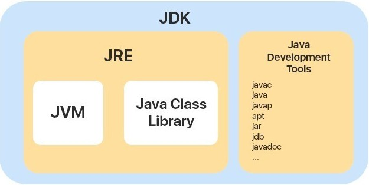
Figura 2 – Diferença entre JDK, JRE, JVM e Java Class Library
Fonte: Andrew; Dora (2019)
Na imagem há um retângulo com a cor azul e o título JDK. Dentro desse retângulo estão mais dois na cor amarela com os textos “JRE” e “Java Development Tools”. Dentro do retângulo JRE estão um quadrado e um retângulo, ambos de cor branca, com os textos “JVM” e “Java Class Library”, respectivamente. No retângulo “Java Development Tools” consta uma lista de itens, sendo eles: “javac”, “java”, “javap”, “apt”, “jar”, “jdb”, “javadoc”, “...”, respectivamente. Essa representação é uma ilustração de como cada elemento Java compõe o outro.
Na prática, a interação da JVM, do JRE e do JDK ocorre da seguinte maneira:
Com isso, conclui-se que, se o seu objetivo é desenvolver aplicações Java, é essencial que ter o JDK instalado no seu computador. Agora, se o seu objetivo é apenas executar uma aplicação Java, então você precisará apenas do JRE. Em outras palavras, o JDK é destinado aos programadores Java, enquanto o JRE é destinado aos usuários de softwares desenvolvidos em Java.
Agora que você entendeu o que significam as siglas do mundo Java, que tal instalar e configurar o ambiente de desenvolvimento para o Java?
Um ambiente de desenvolvimento é o conjunto de ferramentas utilizado no desenvolvimento de sistemas. Geralmente, esse ambiente é composto de algum software específico da linguagem de programação que será utilizada para programar e de um IDE, que conterá um editor de texto interno para escrever os códigos e também outras ferramentas para facilitar o processo de desenvolvimento de software.
Pensando na linguagem de programação Java, você precisará de uma versão do JDK e um IDE. Portanto, este estudo utilizará as versões mais recentes, o Java Development Kit 17, lançado em setembro de 2021, e o Apache NetBeans IDE 13, lançado em 4 de março de 2022.
As versões mais recentes do Java Development Kit e do Apache NetBeans IDE podem variar, de acordo com a data em que você estiver lendo esse conteúdo.
O primeiro passo para instalar o Java Development Kit 17 no Windows é baixar o instalador por meio do site oficial da Oracle. A versão mais recente disponível é a 17.0.2. Logo, essa é a versão que será utilizada neste material. Procure por “Java SE 17 Archive Downloads” para acessar a página com opções de download dessa versão.
Para fazer o download do instalador, clique no link de download do Windows x64 Installer.
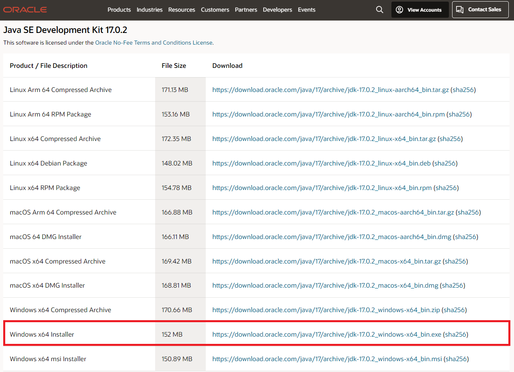
Figura 3 – Site oficial do Java JDK 17
Fonte: Oracle (c2022)
Na imagem consta o site oficial da Oracle para download do Java JDK 17. O título da página é “Java SE Development Kit 17.0.2” e abaixo do título há a descrição This software is licensed under the Oracle no-Free Terms and Conditions License. Logo abaixo, há uma tabela com três colunas: “Product/File Description”, “File Size” e “Download”. Cada linha da tabela representa uma opção para download do JDK 17. A penúltima opção “Windows x64 Installer” está destacada com um contorno vermelho.
Depois de fazer o download do instalador, abra-o para iniciar o processo de instalação do JDK 17. Na primeira tela, você terá uma mensagem de boas-vindas e não será necessário realizar nenhuma ação. Em seguida, clique no botão Next para continuar.
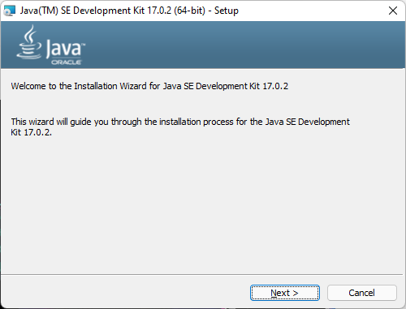
Figura 4 – Tela de boas-vindas do instalador do Java Development Kit 17
Fonte: Java Development Kit 17 (2022)
Na imagem consta a primeira tela apresentada pelo instalador Java Development Kit 17. No topo, há um cabeçalho azul e o logo do Java no canto esquerdo. Abaixo está o texto Welcome to the Instalation Wizard for Java SE Development Kit 17.0.2. This wizard will guide you through the installation process for the Java SE Development Kit 17.0.2. No rodapé estão, respectivamente, os botões “Next” e “Cancel”.
Na tela seguinte, você deve informar ao instalador onde o JDK deve ser instalado. Por padrão, o local informado é o C:\Program Files\Java\jdk-17.0.2\ e recomenda-se que esse caminho não seja alterado, para facilitar a localização do JDK por outras ferramentas. Sendo assim, não é necessário fazer nenhuma configuração nessa tela. Clique em Next para continuar.

Figura 5 – Tela de local de instalação do instalador do Java Development Kit 17
Fonte: Java Development Kit 17 (2022)
Na imagem consta a segunda tela apresentada pelo instalador Java Development Kit 17. No topo, há um cabeçalho azul e o logo do Java no canto esquerdo. Abaixo está o texto Java(TM) SE Development Kit 17.0.2 (64-bit), including a private JRE and src.zip. This will require 420MB on your hard drive. Click the “Change” button to change the installation folder. Logo abaixo, há um ícone de uma pasta com o texto Install Java (TM) SE Development Kit 17.0.2 (64-bit) to: C:\Program Files\Java\jdk-17.0.2\. Ao lado, há o botão “Change...”. No rodapé estão, respectivamente, os botões “Back”, “Next” e “Cancel”.
Agora, o JDK começará o processo de instalação no seu computador. Aguarde.
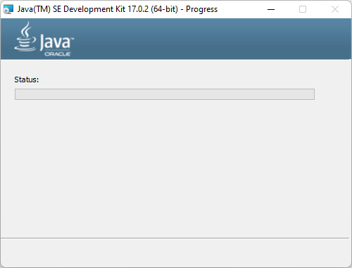
Figura 6 – Tela de andamento do instalador do Java Development Kit 17
Fonte: Java Development Kit 17 (2022)
A imagem mostra a terceira tela apresentada pelo instalador Java Development Kit 17. No topo, há um cabeçalho azul e o logo do Java no canto esquerdo. Abaixo consta o texto “Status” e uma barra de progresso logo embaixo. No rodapé, não há nenhum botão.
Quando a instalação for concluída, você será levado a uma nova tela do instalador, que informará que o JDK foi instalado com sucesso. Para finalizar a instalação, clique em Close.
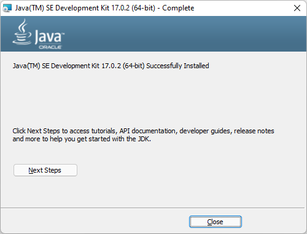
Figura 7 – Tela de conclusão do instalador do Java Development Kit 17
Fonte: Java Development Kit 17 (2022)
A imagem mostra a última tela apresentada pelo instalador Java Development Kit 17. No topo, há um cabeçalho azul e o logo do Java no canto esquerdo. Abaixo está o texto Java(TM) SE Development Kit 17.0.2 (64-bit) Sucessfully Installed. Logo abaixo há outro texto: Click Next Steps to access tutorials, API documentation, developer guides, release notes and more to help you get started with the JDK e o botão “Next Steps”. No rodapé encontra-se apenas o botão “Close”.
Quando um programa é executado, ele pode precisar de informações sobre o ambiente em que ele está sendo executado. Essas informações são passadas via variáveis de ambiente. Na prática, uma variável de ambiente é um atalho para um valor. Na maioria dos casos, é preciso adicionar esses valores para que alguns programas consigam encontrar o que precisam para serem executados corretamente.
Por exemplo, muitos programas precisam saber onde o binário do Java está localizado. Mas encontrá-lo não é algo tão simples, pois esse local pode variar dependendo do sistema operacional e até mesmo da versão do Java. Logo, a forma mais simples para esse programa acessar o binário do Java é por meio do valor informado na variável de ambiente.
No caso do Java, é preciso configurar manualmente a variável de ambiente para que outros programas consigam localizá-lo e ele funcione corretamente. Para isso, execute o seguinte passo a passo:
Figura 8 – Nova variável de sistema do Windows
Fonte: Senac EAD (2022)
A imagem mostra a janela “Nova Variável de Sistema” do Windows. Nela, há dois campos para serem preenchidos. O primeiro campo chama-se “Nome da variável” e contém o valor “JAVA_HOME” na entrada de dados. Já o segundo campo chama-se “Valor da variável” e está preenchido com “C:\Program Files\Java\jdk-17.0.2”. Abaixo do último campo, há quatro botões, dois à esquerda e dois à direita. Os botões da esquerda são “Procurar diretório...” e “Procurar Arquivo...”, e os da direita são “Ok” e “Cancelar”.
Para conferir se a variável foi configurada corretamente, abra o Prompt de Comando do Windows e execute o comando echo %JAVA_HOME%. Se estiver tudo certo, então o caminho de instalação do Java será exibido na tela. Caso não apareça, reinicie seu computador para que as alterações sejam processadas.
Para esse passo a passo de instalação e configuração do Java no Linux, a distribuição Ubuntu será utilizada como base.
O primeiro passo para instalar o Java no Linux é atualizar o índice de pacotes do sistema. No terminal do Ubuntu, utilize este comando:
sudo apt-get update
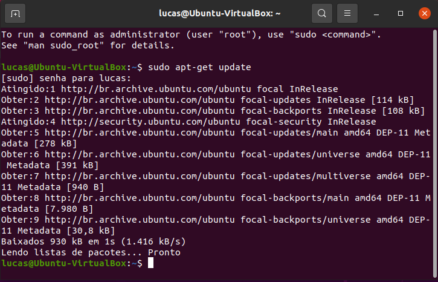
Figura 9 – Terminal do Ubuntu
Fonte: Ubuntu (2022)
A imagem mostra o terminal do Ubuntu aberto. O comando “sudo apt-get update” foi executado e o índice de pacotes do sistema foi atualizado. Na última linha está a mensagem “Lendo lista de pacotes... Pronto”.
Após isso, verifique se o Java já está instalado (ou não) com o comando:
java - version
Se o Java não estiver instalado, você terá a seguinte saída:
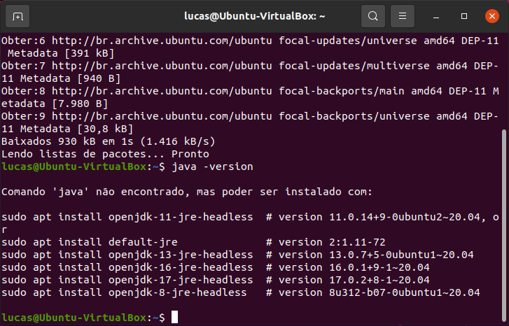
Figura 10 – Terminal do Ubuntu
Fonte: Ubuntu (2022)
A imagem mostra o terminal do Ubuntu aberto. O comando “java -version” foi executado e a mensagem “Comando java não encontrado, mas pode ser instalado com:” aparece, seguida de uma lista de opções para fazer a instalação do Java. A lista apresenta as seguintes opções: “sudo apt install openjdk-11-jre-headless”, “sudo apt install default-jre”, “sudo apt install openjdk-13-jre-headless”, “sudo apt install openjdk-16-jre-headless, “sudo apt install openjdk-17-jre-headless” e “sudo apt install openjdk-8-jre-headless”.
A maneira mais simples de instalar o Java no Ubuntu é por meio dos repositórios do sistema. Por padrão, o Ubuntu empacota o OpenJDK, que é uma alternativa de código aberto para o JRE e o JDK da Oracle. Logo, siga com a instalação do OpenJDK 17 usando o seguinte comando:
sudo apt-get install openjdk-17-jdk
Após isso, basta confirmar a operação pressionando a tecla Enter.
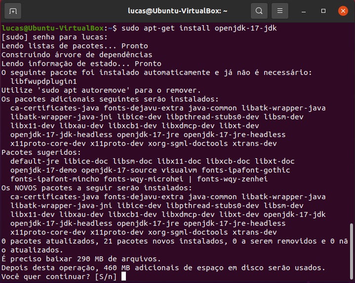
Figura 11 – Terminal do Ubuntu
Fonte: Ubuntu (2022)
A imagem mostra o terminal do Ubuntu aberto. Na primeira linha, o comando “sudo apt-get install openjdk-17-jdk” é executado. Na segunda linha, a senha é solicitada e, nas linhas seguintes, uma lista de pacotes que serão instalados é exibida. No final, consta a mensagem “Depois desta operação, 460 MB adicionais de espaço em disco serão usados. Você quer continuar? [S/n]”.
Observação
Outra forma de instalar o OpenJDK seria por meio deste comando:
sudo apt-get install default-jdk
Esse comando instalará a última versão disponível do JDK e, por isso, é importante que ele seja usado com cautela, pois é possível que uma versão diferente do JDK seja instalada.
Caso você queira fazer o download do JDK oficial da Oracle, acesse o site oficial do Oracle JDK 17 e prossiga com a instalação do pacote Linux x64 Debian Package oferecido na lista de downloads. Após isso, abra o terminal, acesse a pasta de downloads e execute o seguinte comando:
sudo dpkg -i jdk-17.0.3_linux-x64_bin.deb
Caso escolha essa abordagem, lembre-se de que o nome do arquivo pode variar, de acordo com a versão disponibilizada para download.
Assim que o processo de instalação terminar, verifique se está tudo correto executando este comando:
java - version
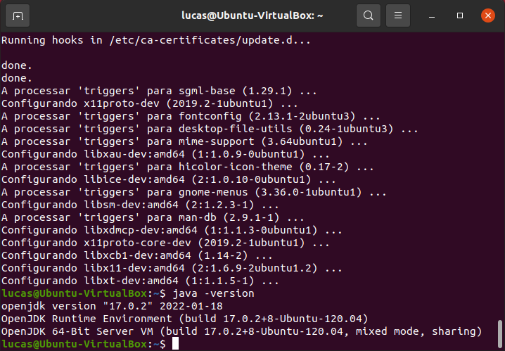
Figura 12 – Terminal do Ubuntu
Fonte: Ubuntu (2022)
A imagem mostra o terminal do Ubuntu aberto com o retorno de “instalação completa” dos pacotes do Java. Após isso, consta o comando “java –version” sendo executado e as seguintes mensagens sendo retornadas: “openjdk version 17.0.2 2022-01-18”; “OpenJDK Runtime Environment (build 17.0.2+8-Ubuntu-120.04)”; “OpenJDK 64Bit Server VM (build 17.0.2+8-Ubuntu-120.03, mixed mode, sharing)”.
Agora, o terminal deve retornar a versão instalada do Java. Se a versão 17 for retornada no seu terminal, isso significa que o JDK 17 foi devidamente instalado no seu sistema Ubuntu.
Um IDE é um software usado para criar aplicações que combina ferramentas comuns de desenvolvimento em uma única interface gráfica do usuário para facilitar o desenvolvimento de sistemas. Geralmente, um IDE ajuda você a organizar seus projetos de software, escrever código, testar, depurar e compilar o código. Como criar softwares é uma tarefa que demanda bastante tempo, é muito importante saber escolher um IDE que realmente torne o desenvolvimento de software mais produtivo e agradável.
A escolha de um IDE de um desenvolvedor pode ser uma coisa muito pessoal e o Java contém diversas opções de IDEs disponíveis. Cada IDE tem seus pontos positivos e negativos, por isso é importante fazer uma boa escolha. Como você está recém iniciando no mundo da programação Java, a melhor opção de IDE para começar é o Apache NetBeans IDE.
Figura 13 – Apache NetBeans IDE (logo)
Fonte: Ferreira (2020)
A imagem mostra a logomarca do Apache NetBeans IDE. Nela, há um cubo tridimensional na cor branca contornado com a cor verde no topo, a cor azul à direita e a cor vermelha à esquerda. Ao lado do cubo, há o texto “Apache” na cor azul e, na linha de baixo, “NetBeans IDE” na cor preta.
O NetBeans começou como um projeto estudantil (originalmente chamado Xelfi) na República Tcheca, em 1996. Xelfi foi o primeiro IDE Java escrito em Java, com seus primeiros pré-lançamentos em 1997.
Em junho de 2000, o NetBeans tornou-se open source (“código aberto”) pela Sun Microsystems, empresa que permaneceu como patrocinadora do projeto até janeiro de 2010, quando se tornou uma subsidiária da Oracle.
Ao longo de sua história na Sun Microsystems e na Oracle, o NetBeans tem sido gratuito e de código aberto e foi aproveitado por seu patrocinador como um mecanismo para impulsionar o ecossistema Java. Em 2016, a Oracle doou o código-fonte do NetBeans para a Apache Software Foundation, resultando assim no atual Apache Netbeans IDE.
O Apache NetBeans IDE permite que você desenvolva rapidamente e com facilidade aplicativos de desktop Java, Java EE e da web, bem como aplicativos HTML5 com HTML, JavaScript e CSS. O IDE também fornece um grande conjunto de ferramentas para desenvolvedores PHP e C/C++. É gratuito e de código aberto e contém uma grande comunidade de usuários e desenvolvedores em todo o mundo.
O Apache NetBeans IDE está disponível para as plataformas Windows, Linux, macOS e Solaris.
Por ser um IDE bastante leve, multiplataforma e que está sempre sendo atualizado para acompanhar as versões do Java, o Apache NetBeans IDE é uma boa porta de entrada para desenvolvedores ao mundo Java. Atualmente, a versão mais recente é a versão 13, lançada em 4 de março de 2022.
A versão mais recente do Apache Netbeans IDE pode variar, dependendo da data em que você estiver lendo este conteúdo.
Nos próximos tópicos, você estudará como instalar, configurar e criar projetos no Apache Netbeans IDE. Porém, é essencial que você já tenha concluído a instalação do Java Development Kit primeiro, pois, durante a instalação do Apache Netbeans IDE, precisará informar onde o JDK está instalado para seguir com a instalação.
O primeiro passo é baixar o instalador do Apache NetBeans IDE no site oficial. No seu navegador, busque por “Download Apache NetBeans 13” para acessar a página de downloads. Como você está fazendo a instalação no sistema operacional Windows, selecione a primeira opção de instalador: Apache-NetBeans-13-bin-windows-x64.exe.
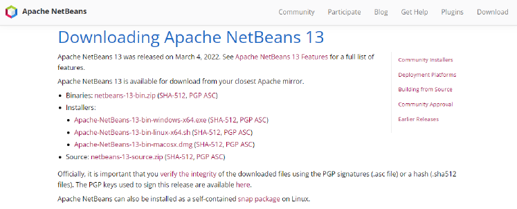
Figura 14 – Site oficial do Apache NetBeans IDE 13
Fonte: Apache NetBeans (2022)
A imagem mostra a página de download do Apache NetBeans IDE 13. O título da página é “Downloading Apache NetBeans 13” e encontra-se abaixo do cabeçalho, que contém os links para navegar no site. Abaixo do título, está o texto Apache NetBeans 13 was released on March 4, 2022. See Apache NetBeans 13 Features for a full list of features. Apache NetBeans 13 is available for download from your closest Apache mirror e, em seguida, a lista de opções para download: “Binaries”, “Installers”, “Source”. Cada opção tem links com o nome dos arquivos que serão baixados. A seguir, está mais um texto com o seguinte conteúdo: Officially, it is importante that you verify the integrity of the downloaded files using the PGP signatures (.asc file) or a hash (.sha512 files). The PGP Keys used to sign this release are available here. Apache NetBeans can also be installed as a self-contained snap package on Linux.
Após fazer o download do Apache Netbeans 13 no site oficial, abra o instalador para iniciar o processo de instalação.
Na primeira tela do instalador, você terá uma breve mensagem de boas-vindas e apresentação do software. Apesar de ser possível especificar quais componentes serão instalados pelo botão Customize..., opte pela instalação completa, pois você precisará desses outros recursos no futuro. Então, pressione o botão Next para continuar.
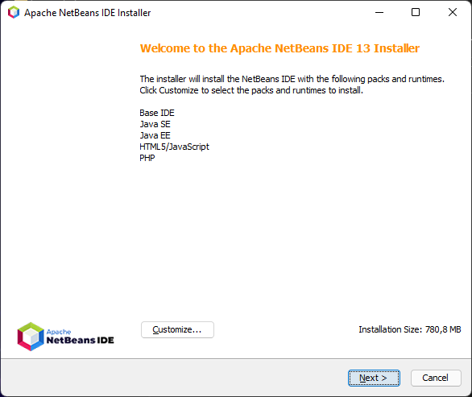
Figura 15 – Tela de boas-vindas do instalador do Apache NetBeans IDE
Fonte: Apache NetBeans IDE (2022)
A imagem mostra a primeira tela apresentada pelo instalador do Apache NetBeans IDE 13. Nela, consta o título Welcome to the Apache NetBeans IDE 13 Installer e o texto The installer will install the NetBeans IDE with the following packs and runtimes. Click Customize to select the packs and runtimes to install. Abaixo, consta uma lista com os itens “Base IDE”, “Java SE”, “Java EE”, “HTML5/JavaScript” e “PHP”. Bem abaixo, perto do rodapé, está o botão “Customize...” e o texto “Installation Size: 780,8 MB”. No rodapé estão, respectivamente, os botões “Next” e “Cancel”.
Na tela seguinte, será apresentado o contrato de licença do Apache NetBeans IDE. Assim que finalizar a leitura, você pode marcar a opção I accept the terms in the license agreement e clicar no botão Next para continuar a instalação.
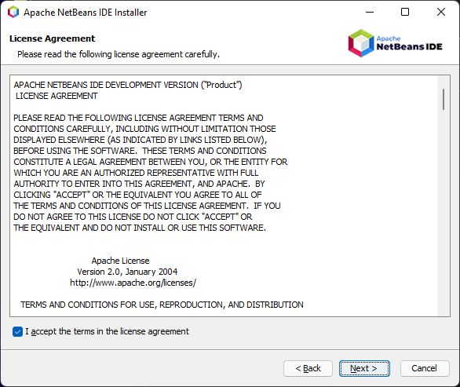
Figura 16 – Tela de contrato do instalador do Apache NetBeans IDE
Fonte: Apache NetBeans IDE (2022)
A imagem mostra a segunda tela apresentada pelo instalador do Apache NetBeans IDE 13. Nela, consta o título “License Agreement” e o texto Please read the following license agreement carefully. Logo abaixo, é apresentado o contrato de licença do software e um checkbox marcado com o texto I accept the terms in the license agreement. No rodapé constam, respectivamente, os botões “Back”, “Next” e “Cancel”.
Na tela seguinte, o instalador solicitará que você indique dois locais:
Install the Apache NetBeans IDE in
Essa opção refere-se ao local em que o IDE será instalado. Por padrão, o local de instalação será na pasta Program Files do Windows.
JDK for the Apache NetBeans IDE
Nessa opção, é preciso informar onde o JDK está instalado. Por padrão, o instalador apontará para a versão mais recente do JDK que existir na pasta Java. Caso não haja, você precisará indicar manualmente o local em que o JDK foi instalado. Se você seguiu o conteúdo passo a passo até aqui, então esse campo já estará preenchido, pois já terá feito a instalação do JDK.
Se estiver tudo correto, siga com a instalação clicando em Next.
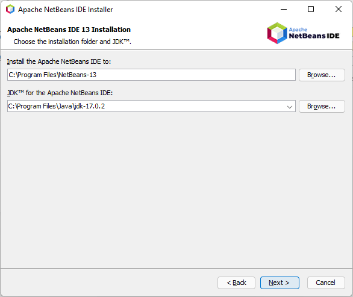
Figura 17 – Tela de local de instalação do instalador do Apache NetBeans IDE
Fonte: Apache NetBeans IDE (2022)
A imagem mostra a terceira tela apresentada pelo instalador do Apache NetBeans IDE 13. Nela, consta o título “Apache NetBeans IDE 13 Installation” e o texto Choose the installation folder and JDK™. Logo abaixo, há dois campos preenchidos e um botão “Browser...” ao lado de cada campo. O primeiro deles é o “Install the Apache NetBeans IDE to:”, e está preenchido com “C:\Program Files\NetBeans-13”. O segundo campo é o “JDK™ for the Apache NetBeans IDE:”, e está preenchido com “C:\Program Files\Java\jdk-17.0.2”. No rodapé estão, respectivamente, os botões “Back”, “Next” e “Cancel”.
Na tela seguinte, o instalador perguntará se você quer receber as atualizações do Apache NetBeans IDE. Para que seu ambiente esteja sempre atualizado, mantenha a opção Check for Updates marcada. Por fim, clique no botão Install para iniciar a instalação do IDE.
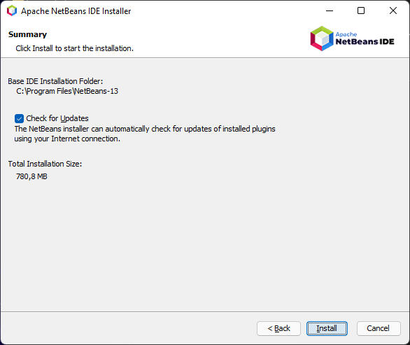
Figura 18 – Tela de atualização do instalador do Apache NetBeans IDE
Fonte: Apache NetBeans IDE (2022)
A imagem mostra a quarta tela apresentada pelo instalador do Apache NetBeans IDE 13. Nela, consta o título “Summary” e o texto Click Install to start the installation. Logo abaixo, está o texto “Base IDE Installation Folder: C\Program Files\NetBeans-13” seguido de uma check marcada com o conteúdo “Check for Updates”. Abaixo do checkbox, há o texto The NetBeans installer can automatically check for the updates of installed plug-ins using yout Internet Connection. Total Installation Size: 780,8 MB. No rodapé consta, respectivamente, os botões “Back”, “Install” e “Cancel”.
Assim que a instalação for finalizada, uma mensagem de “instalação concluída com sucesso” será apresentada e o Apache NetBeans IDE estará pronto para ser utilizado. Finalize a instalação clicando no botão Finish.
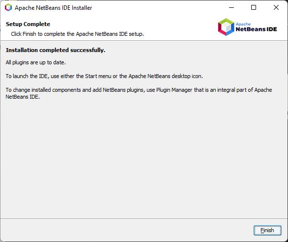
Figura 19 – Tela de conclusão do instalador do Apache NetBeans IDE
Fonte: Apache NetBeans IDE (2022)
A imagem mostra a última tela apresentada pelo instalador do Apache NetBeans IDE 13. Nela, consta o título “Setup Complete” e o texto Click Finish to complete the Apache NetBeans IDE setup. Logo abaixo, está a seguinte mensagem: Installation completed successfully. All plugins are up to date. To launch the IDE, use either the Start menu or the Apache NetBeans desktop icon. To Change installed components and add NetBeans plugins, use Plugin Manager that is an integral part of Apache NetBeans IDE. No rodapé, consta apenas o botão “Finish”.
Para instalar o Apache Netbeans 13 no Ubuntu, existem três formas:
Dessas, a terceira opção é a mais prática e garantirá a versão mais recente do software. Então, acesse o aplicativo Ubuntu Software Center.
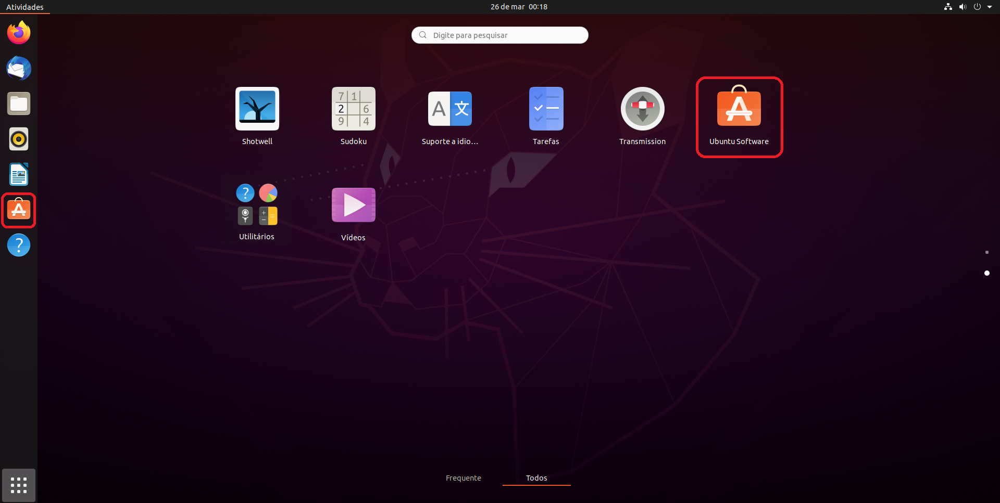
Figura 20 – Exemplo de menu de aplicativos do Ubuntu
Fonte: Senac EAD (2022)
A imagem mostra um exemplo do menu de aplicativos do Ubuntu. Nele, estão sendo exibidos os ícones dos aplicativos Shotwell, Sudoku, Suporte a idio..., Tarefas, Transmission, Ubuntu Software, Utilitários e Vídeos. O aplicativo Ubuntu Software está destacado com um contorno vermelho. No lado esquerdo, no canto da tela, está a barra de tarefas do sistema operacional Linux Ubuntu. Nessa barra, há sete ícones de aplicativos. O penúltimo ícone trata-se do mesmo ícone do aplicativo Ubuntu Software e também está destacado com um contorno em vermelho.
Assim que a loja abrir, clique no ícone de lupa localizado no canto esquerdo da tela e preencha a barra de pesquisa que aparecerá com NetBeans. Você perceberá que há dois resultados: o NetBeans e o Apache NetBeans.
O aplicativo NetBeans trata-se da versão 10 do IDE, quando a Oracle era responsável pelas atualizações. Logo, essa é a versão desatualizada. A versão atualizada é a que está sendo mantida pela Apache e se chama Apache NetBeans. Selecione essa opção para continuar.
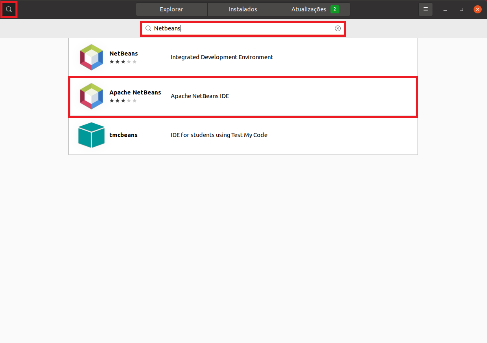
Figura 21 – Ubuntu Software Center
Fonte: Ubuntu Software Center (2022)
Na imagem, o aplicativo Ubuntu Software Center está aberto. No topo do aplicativo, há uma barra preta com os botões “Explorar”, “Instalados” e “Atualizações (2)” posicionados no centro da barra. No canto esquerdo dessa barra está o ícone de uma lupa, destacado com um contorno em vermelho. Abaixo da barra preta, consta uma barra de pesquisa preenchida com o texto “NetBeans” e, abaixo, está sendo exibido o resultado da pesquisa. Os resultados contam com o ícone do aplicativo à esquerda, seguido do nome do aplicativo e a avalição (em estrelas) ao lado e, ainda, uma breve descrição do aplicativo. São três aplicativos que estão sendo exibidos como resultado da pesquisa:
1. NetBeans (três estrelas): Integrated Development Environment
2. ApacheNetBeans (três estrelas): Apache NetBeans IDE
3. tmcbeans (sem estrelas): IDE for students using Test My Code
O segundo resultado está destacado com um contorno vermelho.
Na página do Apache NetBeans, clique no botão Instalar.

Figura 22 – Ubuntu Software Center
Fonte: Ubuntu Software Center (2022)
A imagem mostra o Ubuntu Software Center aberto, exibindo o Apache NetBeans. Nessa tela constam o logo do NetBeans no topo e o nome do software “Apache NetBeans” no lado esquerdo. No lado direito, está a avaliação do software em três estrelas e o valor “(442)”, representando os números de usuários que avaliaram o aplicativo. Abaixo estão o botão “Instalar”, destacado em vermelho, uma captura de tela expandida e duas pequenas ao lado e a descrição do software logo abaixo: Apache NetBeans IDE lets you quickly and easily develop Java desktop, Java EE, and web applications, as well as HTML 5 applications with HTML, JavaScript and CSS. The IDE also provides a great set of tools for PHP and C/C++ developers. It is free and open source and has a large community of users and developers around the world. It requires Java 8 or later Java Development Kit installed. Disclaimer: This is a convenience binary of Apache NetBeans IDE, this is not na official release.
Assim que a instalação for finalizada, você encontrará o Apache NetBeans no seu menu de aplicativos pronto para ser utilizado.
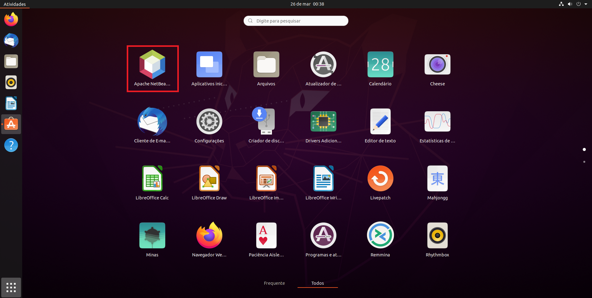
Figura 23 – Exemplo de menu de aplicativos do Ubuntu Software Center
Fonte: Senac EAD (2022)
A imagem mostra o exemplo de menu de aplicativos do Ubuntu. Nele, estão sendo exibidos os ícones de 24 aplicativos, sendo o primeiro o Apache NetBeans IDE, que está destacado com um contorno vermelho.
Agora que você já está com seu ambiente de desenvolvimento pronto, chegou a hora de criar seu primeiro projeto Java. Para isso, comece criando um projeto bem simples chamado “Hello, World!”.
Por enquanto, não serão abordadas questões técnicas da linguagem, como sintaxes e chamada de funções. Esse conteúdo será estudado em outros tópicos.
O “Hello, World!” (ou “Olá, mundo!”, em português) é um programa simples, com poucas linhas de código, que retorna a mensagem “Hello, World!“ na tela. Desenvolver um programa “Hello, World!” é uma prática comum entre as pessoas que estão aprendendo programação ou estão conhecendo uma nova linguagem de programação.
Ele também serve para verificar se um ambiente de programação está devidamente configurado, já que algumas linguagens de programação podem requerer algumas instalações e configurações adicionais. Assim, o “Hello, World!” também é uma forma de verificar se o ambiente está configurado adequadamente. Portanto, se o programa funcionar, significa que está tudo correto com o seu ambiente de desenvolvimento.
Com o Apache NetBeans IDE aberto, clique no primeiro item do menu superior File para revelar novas opções no menu e selecione a primeira opção, New Project..., para começar a criação de um novo projeto. Você também pode usar o atalho CTRL + SHIFT + N para acessar essa opção.
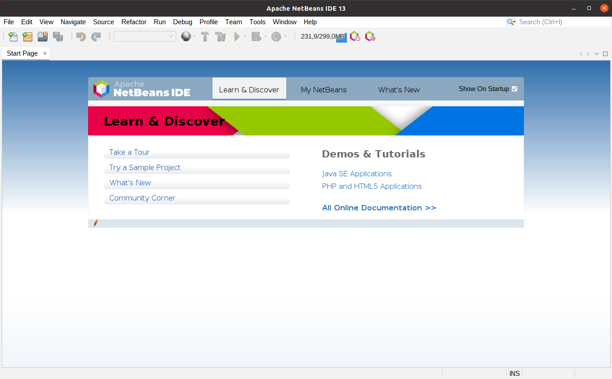
Figura 24 – Apache NetBeans IDE
Fonte: Apache NetBeans IDE (2022)
A imagem mostra a tela inicial do Apache NetBeans IDE 13. No topo, consta um menu de opções no qual o primeiro item “File” está selecionado, revelando novas opções na interface. Nessa lista de novas opções, a primeira opção “New Project...” está destacada com um contorno vermelho.
Uma nova janela será aberta e você será questionado sobre que tipo de projeto deseja criar. O Apache NetBeans IDE oferece três opções para projetos em Java:
Figura 25 – Apache NetBeans IDE
Fonte: Apache NetBeans IDE (2022)
Na imagem, está a janela “New Project” na etapa “1. Choose Project”. No lado esquerdo está um quadrado com uma lista de opções dentro e o título “Categories”. Neste, a opção “Java with Maven” está selecionada. No lado direito, consta um outro quadrado com uma lista de opções dentro e o título “Projects”. Neste, a primeira opção da lista “Java Application” está selecionada.
Assim que você finalizar a codificação de um software, a etapa seguinte será compilar e rodar o projeto. Quando é necessário realizar a compilação (build) de um projeto, normalmente esse processo é realizado manualmente. Conforme o projeto se torna maior e mais complexo, principalmente quando são inseridas novas bibliotecas nele, esse processo tende a se tornar maior e mais complexo também. Para economizar tempo e trabalho, é comum desenvolvedores recorrerem a sistemas de compilação automático e, ao criar um projeto Java no NetBeans, o IDE oferece três opções, usando um sistema de compilação automático integrado. As opções oferecidas são o Maven, o Gradle e o Ant, respectivamente. Para compreender como cada uma dessas bibliotecas funciona na prática, crie três projetos de “Hello, World!” usando cada uma delas.
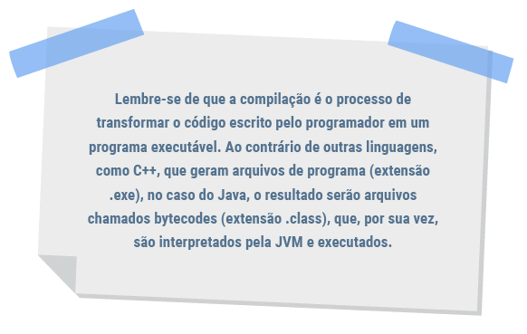Lembre-se de que a compilação é o processo de transformar o código escrito pelo programador em um programa executável. Ao contrário de outras linguagens, como C++, que geram arquivos de programa (extensão .exe), no caso do Java, o resultado serão arquivos chamados bytecodes (extensão .class), que, por sua vez, são interpretados pela JVM e executados.
Para se manter uma abordagem didática neste momento, a ordem sugerida pelo NetBeans será invertida. Ao invés de criar respectivamente um projeto com o Maven, seguido do Gradle e por fim com o Ant, você começará pelo Ant, em seguida partirá para o Gradle e só depois utilizará o Maven.
Vale destacar ainda que é possível a compilação simples e direta de código Java a partir de terminal, usando o comando javac. Em projetos maiores, o mais interessante é recorrer a ferramentas de automatização, como as utilizadas pelo NetBeans.
O Apache Ant é uma biblioteca Java usada para automatizar processos de compilação e construção de aplicativos Java, lançado em 2000. Antes do seu surgimento, a única ferramenta de automação de build disponível era o Make, e este foi muito usado para construir aplicativos nos primeiros anos do Java. Em muitos aspectos, o Ant é muito semelhante ao seu antecessor e é a melhor opção para criação de projetos simples e para programadores que estão iniciando na área de programação.
Para criar um projeto com o Ant, selecione a opção Java with Ant em Categories e Java Application em Projects. Após isso, clique em Next para continuar.
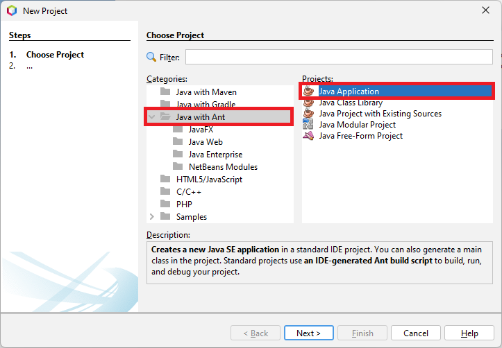
Figura 26 – Apache NetBeans IDE
Fonte: Apache NetBeans IDE (2022)
A imagem mostra a janela “New Project” na etapa “1. Choose Project”. No lado esquerdo, está um quadrado com uma lista de opções dentro e o título “Categories”. Neste, a opção “Java with Ant” está selecionada. No lado direito, consta um outro quadrado com uma lista de opções dentro e o título “Projects”. Neste, a primeira opção da lista “Java Application” está selecionada.
Na tela seguinte, você precisará informar qual será o nome do seu projeto. Dessa forma, será criada uma pasta com o mesmo nome no local definido em Project Location. Por conta disso, é importante que o nome do projeto não contenha espaços nem caracteres especiais. Nesse exemplo, você criará um projeto “HelloWorld”. Após isso, tenha certeza de manter a opção Create Main Class selecionada para o IDE já criar o arquivo que será a classe principal e em seguida clique em Finish.
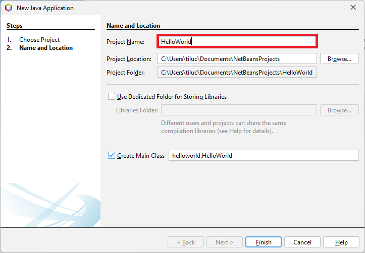
Figura 27 – Apache NetBeans IDE
Fonte: Apache NetBeans IDE (2022)
A imagem mostra a janela “New Project” na etapa “2. Name and Location”. Nessa tela, consta o título “Name and Location” e, logo abaixo, há vários campos de entrada de dados preenchidos. O primeiro campo é o “Project Name:” e está preenchido com “HelloWorld”. Este, está destacado com um contorno vermelho. O campo seguinte é o “Project Location:” e está preenchido com “C:\Users\tiluc\Documents\NetBeansProjects”. O próximo campo é o “Project Folder:” e está preenchido com “C:\Users\tiluc\Documents\NetBeansProjects\HelloWorld”. Abaixo, está uma checkbox desmarcada com o texto Use Dedicated Folder for Storing Libraries. Mais abaixo, constam outra checkbox, mas essa está marcada e tem o texto “Create Main Class”, e uma input ao lado preenchida com “helloworld.HelloWorld”. No rodapé estão, respectivamente, os botões “Finish”, “Cancel” e “Help”.
Assim que o projeto for criado, você verá a seguinte tela:
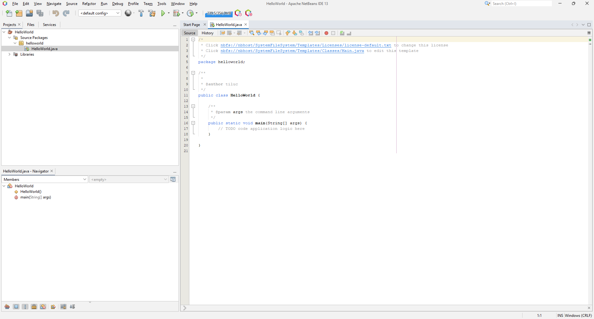
Figura 28 – Apache NetBeans IDE
Fonte: Apache NetBeans IDE (2022)
A imagem mostra a tela inicial do Apache NetBeans IDE com um projeto “HelloWorld” aberto. Do lado esquerdo, está a lista de projetos na guia “Projects”. Nessa lista, consta o projeto “HelloWorld” com o item “Source Packages” e o subitem “helloworld” expandidos, revelando o arquivo “HelloWorld.java” na estrutura do projeto. O arquivo “HelloWorld.java” está selecionado. Já no lado direito está o código inicial do projeto criado pela própria IDE.
Antes de escrever seu código, conheça melhor o Apache NetBeans IDE.
No lado esquerdo da tela está a lista de projetos. Todos os seus projetos criados com o NetBeans aparecerão aqui. Dentro de cada projeto, há pacotes que funcionam como subpastas para organizar os arquivos do projeto e, dentro dos pacotes, estarão os seus arquivos, os quais serão, na maioria, os códigos Java que você criará e escreverá. Ainda dentro do projeto, haverá as dependências que são, em sua essência, as bibliotecas necessárias para que algum recurso específico do projeto funcione. Se você expandir o item Libraries (“bibliotecas”, em português), encontrará todas as dependências Java sendo usadas pelo projeto. Repare que mesmo um projeto base, como o que está sendo criado agora, necessita de várias bibliotecas para funcionar. Conforme seu projeto for ficando maior e mais complexo, a tendências é o número de bibliotecas aumentar.
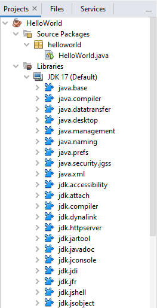
Figura 29 – Apache NetBeans IDE
Fonte: Apache NetBeans IDE (2022)
A imagem mostra a estrutura do projeto “HelloWorld” apresentada no Apache NetBeans IDE. Na raiz do projeto, estão duas pastas: “Source Packages” e “Libraries”. Ambas estão expandidas, revelando novos conteúdos dentro. Dentro de “Source Packages” está o pacote “helloworld”, que contém o arquivo “HelloWorld.java”. Já em “Libraries” está o “JDK 17 (default)” e, dentro dele, uma série de bibliotecas Java (“java.base”, “java.compiler”, “javadatransfer”, “java.desktop”, “java.management”, “java.naming”, “java.prefs”, “java.security.jgss”, “java.xml”, “jdk.accessibility”, “jdk.attach”, “jdk.compiler”, “jdk.dynalink”, “jdk.httpserver”, “jdk.jartool”, “jdk.javadoc”, “jdk.console”, “jdk.jdi”, “jdk.jfr”, “jdk.jshell”, “jdk.jsobject”).
Logo abaixo, há uma área que mostrará um resumo das variáveis e funções declaradas nos arquivos do seu projeto. Isso pode ser muito útil para localizar áreas específicas do seu código quando você tiver centenas de linhas em apenas um arquivo.
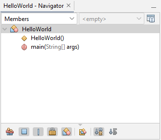
Figura 30 – Apache NetBeans IDE
Fonte: Apache NetBeans IDE (2022)
A imagem mostra a área “Navigator” do projeto “HelloWorld”, que é apresentada no canto inferior esquerdo do Apache NetBeans IDE. Nela, consta uma lista de itens e subitens. O primeiro item da lista é o projeto HelloWorld e nele há dois subitens: “HelloWorld()” e “main(String[] args)”, que contêm, respectivamente, um losango e um círculo com um risco na vertical como ícones localizados no lado esquerdo de cada item.
Por fim, é apresentada a área de edição de texto, que é onde você passará a maior parte do tempo escrevendo códigos. Quando se cria um arquivo Java no projeto, o IDE encarrega-se de criar toda a estrutura-base para se começar a escrever o código. Além disso, alguns comentários são adicionados, incluindo o nome do usuário do sistema operacional (linha 9), para representar uma assinatura de “quem criou esse código”. Esses comentários não são necessários para seu código funcionar, então você pode “limpá-los” para deixar seu código mais claro. Além disso, também adicione o seguinte trecho de código na sua função principal para exibir a mensagem “Hello, World!”:
System.out.println("Hello, World!");
O código completo, sem os comentários, ficará da seguinte maneira:
package helloworld;
public class HelloWorld {
public static void main(String[] args) {
System.out.println("Olá, mundo!");
}
}
Perceba que, após editar o arquivo HelloWorld.java, o nome dele ficará em negrito. Isso significa que o arquivo teve alterações e elas ainda não foram salvas. Se você editar o código de um arquivo e não salvar as alterações, elas não serão aplicadas ao seu programa. Portanto, lembre-se de salvar seu projeto sempre para que erros não ocorram.
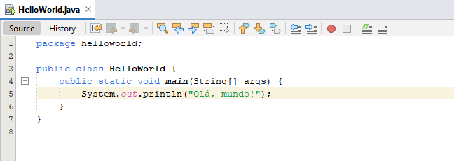
Figura 31 – Apache NetBeans IDE
Fonte: Apache NetBeans IDE (2022)
A imagem mostra a área de edição de texto do Apache NetBeans IDE. Nela, a aba “HelloWorld.java” está em negrito e, abaixo da aba, consta o editor de texto com o conteúdo do respectivo arquivo. O seguinte código está escrito:
package helloworld;
public class HelloWorld {
public static void main(String[] args) {
System.out.print("Olá, mundo!");
}
}
Para salvar as alterações, acesse o menu File e selecione a opção Save. Porém, com o passar do tempo, esse processo pode se tornar muito cansativo para você. Como alternativa, é possível utilizar o atalho CTRL + S para salvar as alterações no arquivo mais rapidamente. Assim que as alterações forem salvas, o nome do arquivo não estará mais em negrito.
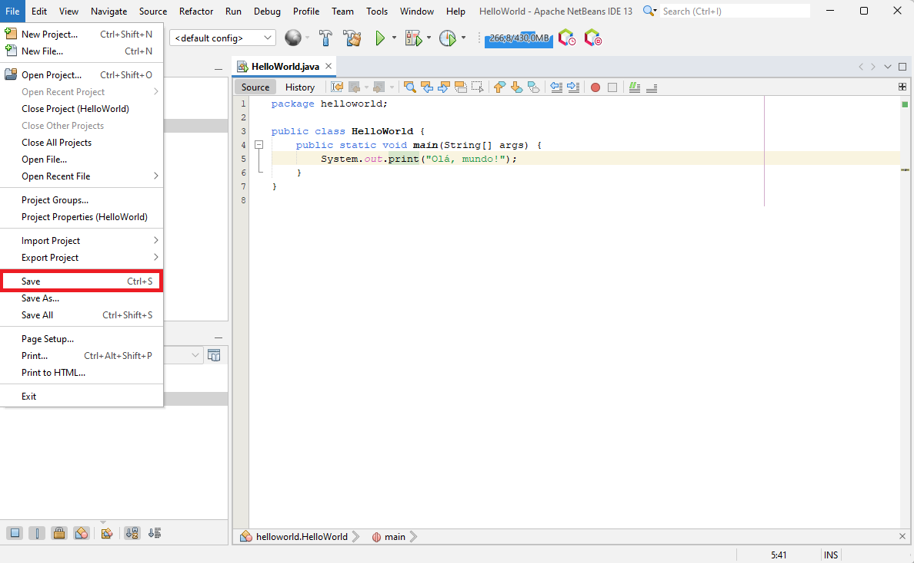
Figura 32 – Apache NetBeans IDE
Fonte: Apache NetBeans IDE (2022)
A imagem mostra uma visão completa do Apache NetBeans IDE. Nela, a aba “HelloWorld.java” está em negrito com o código de “HelloWorld” escrito no arquivo. No topo da tela, está o menu de opções da IDE, no qual a primeira opção “File” está expandida, revelando as outras opções. Entre estas está a função “Save CTRL+S”, que está destacada com um contorno vermelho.
Agora que você já escreveu o seu código e salvou as alterações, já pode rodar o projeto! Para isso, clique no botão de Run Project.
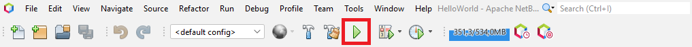
Figura 33 – Apache NetBeans IDE
Fonte: Apache NetBeans IDE (2022)
A imagem mostra o menu de opções do NetBeans no topo e, logo abaixo, alguns ícones para acesso rápido de outras funcionalidades do IDE. Entre essas opções, há um ícone de “Play”, que representa a função de “Run project”. Esse ícone está destacado com um contorno em vermelho.
Quando você tentar rodar o projeto, o Ant entrará em ação para primeiro compilar o projeto e só depois executá-lo compilado.
No final, você terá o resultado mostrado no gif:
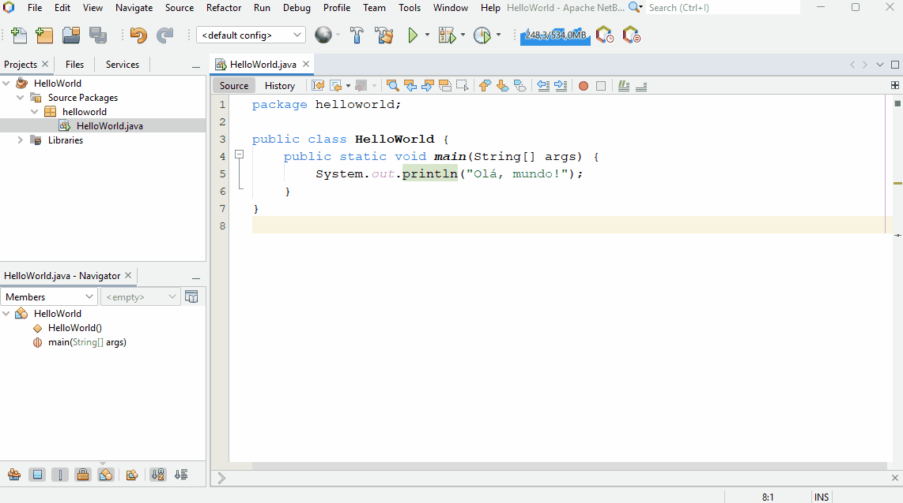
O gif mostra a área de edição de texto do Apache NetBeans IDE. Nele, a aba “HelloWorld.java” não está em negrito e, abaixo da aba, está o editor de texto com o conteúdo do respectivo arquivo. O seguinte código está escrito:
package helloworld;
public class HelloWorld {
public static void main(String[] args) {
System.out.println("Olá, mundo!");
}
}
O cursor do mouse se posiciona sobre o botão “Run Project”, localizado acima da aba do arquivo “HelloWorld.java”. O botão é clicado e é revelado abaixo do código um terminal branco chamado “Output – HelloWorld (run)”. O conteúdo do terminal é:
“run:
Olá, mundo!
BUILD SUCCESSFUL (total time: 0 seconds)”.
O Apache Maven é uma poderosa ferramenta de gerenciamento de projetos de software usada no ambiente de desenvolvimento Java para gerenciar e construir projetos, bem como para gerenciar dependências em projetos Java. Essas dependências são nada mais, nada menos do que as bibliotecas externas que a aplicação utilizará. Você pode definir as dependências e outras configurações do projeto por meio de um arquivo XML chamado pom.xml.
Agora que você já conhece um pouco do Maven, que tal praticar?
Crie um novo projeto no Apache NetBeans IDE com o Maven e utilize o mesmo código de “Hello, World!” usado na criação do projeto com o Ant. Por fim, execute o projeto e compare o tempo necessário para o projeto executar com o Ant e o Maven.
Gradle é uma ferramenta de gerenciamento de dependência e automação de build, que foi construída sobre os conceitos do Ant e do Maven.
Uma das primeiras coisas que se pode notar sobre o Gradle é que ele não faz uso de arquivos XML, ao contrário do Maven. Isso levou a arquivos de configuração mais compactados e com menos confusão para os desenvolvedores. O arquivo de configuração do Gradle é por convenção chamado de build.gradle.
Crie um novo projeto no Apache NetBeans IDE com o Gradle e utilize o mesmo código de “Hello, World!” usado na criação do projeto com o Ant. Por fim, execute o projeto e compare o tempo necessário para o projeto executar com o Ant e o Maven.
Se você realizou os desafios propostos sobre a criação do projeto “Hello, World!” com o Maven e o Gradle, você deve ter percebido que a construção do código-fonte permaneceu exatamente a mesma, em comparação com o Ant. Porém, existem algumas características diferentes, tais como:
Apesar de o IDE recomendar o uso do Maven na criação de projetos, essa ferramenta pode tornar o desenvolvimento de software mais complexo para aqueles que estão começando nessa área (o mesmo vale para o Gradle). Como, inicialmente, não será necessário fazer uso de pacotes e bibliotecas externas do JDK para desenvolver as suas aplicações, a melhor opção é utilizar o Ant, já que ele não tem um gerenciador de pacotes que tornará o projeto mais complexo.
Assim se concluem a introdução à linguagem de programação Java, a configuração do ambiente de desenvolvimento e a criação dos seus primeiros projetos usando o Apache NetBeans IDE. Esses são os primeiros passos para começar a aprender qualquer linguagem de programação e são a base para iniciar o desenvolvimento de sistemas com qualquer tecnologia. Agora que você já tem todas as ferramentas instaladas e em perfeito funcionamento, está pronto para aprofundar seus estudos na linguagem de programação Java.